amfm's 20 ALBUMS OF 2009 (1 thru 5)
By: Ciera Mckissick
5.Miike Snow, Miike Snow
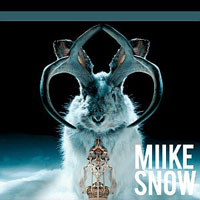Don’t let the name Miike Snow confuse you. Miike Snow is not one person, it is a band of Swedes that has brought their rockin’ fun pop music to an iPod near you. Their songs embed themselves into your brain for days and almost become a soundtrack for our lives. Their single “Animal,” from their self-titled debut, Miike Snow, is reminiscent of Flaming Lips past meets Animal Collective. "I change shapes just to hide in this place but I’m still, I’m still an animal," speaks to the ever-changing society that we live in and the different phases of life we experience. Listeners will find solace in listening to the album because of its light take on life, and lyrics that speak to our young hearts.
[ANIMAL]
4. Animal Collective, Meriweather Post Pavilion
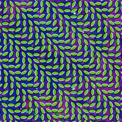This band, album and even their album art have the ability to send you into a musical trip. The fact that they are rarely visually seen adds to the allure of the oddities of a wonderfully mastered album. They are known for making experimental music that is highly progressive. MeriWeather Post Pavilion is the band’s eighth studio album, and this album has received nothing but acclaim as one of the best albums of the year, before the year was even over. It definitely kicked off a year to great music because it came out right at the beginning of January. "My Girls" is the epitome of the magic behind the album. You’ll find yourself walking around the fantasy world that Animal Collective has created for you, and loving every minute of it against all odds.
[MY GIRLS]
3. Yeah Yeah Yeahs, It’s Blitz
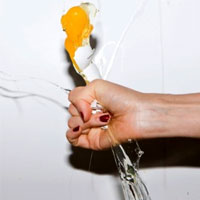The Yeah Yeah Yeahs came back following their 2006 album Show Your Bones and their 2007 released EP Is Is. It’s Blitz, although a different sound than their previous albums is still the Yeah Yeah Yeahs at their greatest. It really shows how the band can reinvent themselves, yet still be good. They are following what’s popular in music at the moment and adding their personal YYY flavor to the mix. Karen O shines through on this album with her cool nature and ability to bring the songs alive. When listening you can image the essence of O in every word that she says. Songs like "Zero" and "Heads Will Roll" are dance anthems, while songs like "Hysteric" and "Skeletons" are melancholying happy and nostalgic.
[ZERO]
2. Metric, Fantasies
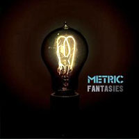Metric’s album Fantasies was a close runner up for first place. This album pumps you up and then eases you down, with beautiful songs like "Gimme Sympathy," matched against songs like "Sick Muse." Emily Haines’ voice speaks to your soul, injecting the music into your veins, and into a cataclysmic Metric state. You could hear the fucking through the wall that Haines describes in "Satellite Mind." The drums and the repetition of satellite mind mixed with Ooo, Ooos, is like an adrenaline rush— as is the song "Gold Gun Girls," which kicks off intensely with the guitar and drums, like a gunshot to your ears. With,"All the gold and the guns in the world couldn’t get you off/ All the gold and the guns and the girls couldn’t get you off, and the chorus “Is it ever gonna be enough?” repeating, playing the song just once is never enough. You always want more and more, and the same is true for the album.
[GOLD GUN GIRLS]
1. Phoenix, Wolfgang Amadeus Phoenix
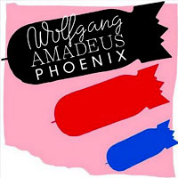Phoenix’s album Wolfgang Amadeus Phoenix has as much to offer as the great composer himself, Mozart. This being the French rock band’s sixth album, they have quite a bit under their belts. Their song "1901" was a hit this year, and was featured in a series of Cadillac commercials, and even landed a Grammy nomination for the stellar track. This is a happy tune—and your body will not be able to resist moving to the guitar and keyboard backing this song. Their album is uniquely fresh and raw, and there is joy bursting from each track. “Love Like a Sunset” really showcases their instrumental talent as musicians. This nearly 8 minute song takes you on a journey through an energetic mix through the ultimate jam session. The combination of different morphing melodies is like the emotional rollercoaster you feel when in love. The buildup is momentous and satisfying once you get there. It’s got this Radiohead intensity to it, with only half the darkness and oddity, more in the spirit of Coldplay. They keep topping themselves with each album, growing more mature and recognized with each one.
[1901]
HONORABLE MENTIONS (in no specific order...)
1. Bon Iver, Blood Bank EP
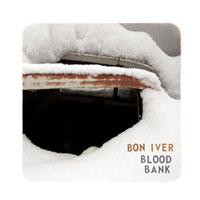
2. Where the Wild Things Are Motion Picture Soundtrack
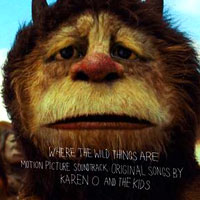
3. Dan Deacon, Bromst
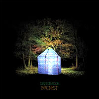
4. Grizzly Bear, Veckatimest
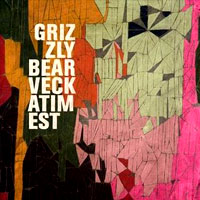
5. New Moon Motion Picture Soundtrack
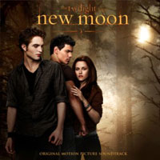
6. The Decemberists, Hazards of Love
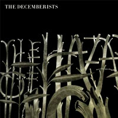
7. Andrew Bird, Noble Beast
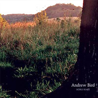
8. The Mars Volta, Octachdron
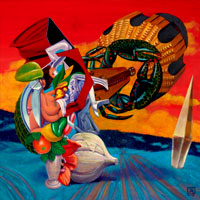
9. La Roux, La Roux
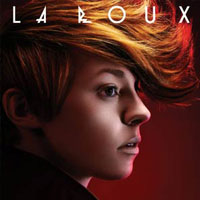
1 | 2 | 3 | 4 | LISTENING PAGE